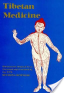

books.google.comhttp://books.google.com/books/about/Tibetan_Medicine.html?id=GLSm9Rwa474C&utm_source=gb-gplus-shareTibetan Medicine
Page
Preface vn Part I Introduction History of Tibetan Medicine Tibetan Medicine (from
the Second and Fourth Books of the rGyud-bzhi) Bibliography of European Works
on Tibetan Medicine Illustrations 3 8 29 98 104 Part II The Life of the Great ...
Page
On his return to Tibet he spread medical science throughout the country and
shared his knowledge with many. For the preservation of our Tibetan culture I
had the great desire to translate books on Tibetan Medicine, as well as to
translate the ...
Page
(c) A brief account of the two important chapters from the Phyi-rgyud ; i.e. the
examination of the pulse and the urine, forming the basis of Tibetan medicine
and medical practice. (d) A series of Anatomy diagrams. First and foremost I owe
my ...
Page 3
Introduction. by. MARIANNE. WINDER. The biography of the great physician-
saint gYu-thog Yon-tan mGon-po is the first complete Tibetan medical work ever
to be translated into a European language. The only other extant translations are
...
Page 4
Illustrated in Original Texts. that the Venerable Rechung Rinpoche, himself the
Incarnation of Rech- ungpa who told the story of the great Yogi Milarepa (a.d. I
140-1223), is able to pass it on to the West. Racially the Tibetans resemble their ...
Page 5
The Mahayana spread from India to Tibet, Mongolia, China and Japan. In the
twelfth century A.d. it was driven out of India by advancing Mohammedanism and
by other factors such as Hinduism resenting the equality given to persons of ...
Page 6
The main extension of the Mahayana in Tibetan Buddhism is its ritualistic aspect,
the Tantra. The practice of medicine by members of the Order of Monks has been
discouraged in Hinayana Buddhism but in the Mahayana with its great stress ...
Page 7
Illustrated in Original Texts. be explained by the law of karma according to which
somebody may be ready for a saintly career through efforts made in former lives.
There are also the great Bodhisattvas who are the embodiment of principles ...
Page 8
History. of. Tibetan. Medicine. In the golden age when human beings had come
into existence they, for a long time, did not have to eat material food but lived in
samādhi* There was neither sun nor moon nor stars for they themselves emitted
...
Page 9
At the time of the Buddha Kasyapa he had heard him teach the science of
Medicine and therefore the wound in his cheek emitted the sounds of the letters a
and tha. These reminded him of the medicine the Buddha had taught in the world
.
Page 10
Moreover, specially for the sake of the sick and of future disciples, he appeared
as the Medicine Buddha and taught the rGyud-bzhi at lTa-na- sdug. But some
people, for instance Bi-byi, say that the lTa-na-sdug where the Buddha taught ...
Page 15
King Sron-btsan sGam'po's Queen, a Chinese princess, brought the medical text
called Sman-dpyad Chen-mo (Great Analytical Treatise on Medicine) from China,
and it was translated into Tibetan by Ha-shang Mahadeva and Dharmakosa.
Page 17
Illustrated in Original Texts. Padmasarhbhava prophesied the birth of Vairochana
whose father's name would be Pa-gor He-hdod and whose mother's name would
be Bran- ka-bzah sGron-skyid, and who would become a great translator.
Page 18
into a box made of the wood of acacia catechu and said: 'These are the texts of
the King's life preservers' and had a number of intelligent boys trained in
medicine: from the upper part of Tibet Chher-rje Shig-po and Hug-pa Chhos-
bzan and ...
Page 19
Shes-rab who wrote the medical commentary on the rGyud-bzhi called gSer-gyi
Ban-mdzod and a history of medicine and ... Chher-rje-ti-pa who passed the
teaching on to Ghher-rje Shan-ston Shig-po who wrote a history of Tibetan
Medicine ...
Page 21
Illustrated in Original Texts. Mi-nyag Se'u rGyal-po, as the Yon er gYu-chhos
Grags-dpal-bzah and hBum-skyon rGyal-mo, the daughter of Se-tu Chhos-rin in
the wood pig year of the seventh rab-byuh.* When he was small none of his
activities ...
Page 22
Illustrated in Original Texts. Fifth Dalai Lama had as a court physician Dhar-mo
sMan-rams-pa bLo-bzah- Chhos-grags,* who saw to the printing of the life story
of the first and second gYu-thogs and composed some other texts. But the Fifth ...
Page 23
He thought : 'Now I ought to found a college of medicine and astronomy. In this
way I would be of great benefit to the Tibetan people, the Buddhist religion and
also the Tibetan government.' He wrote to His Holiness's Cabinet asking for the ...
Page 26
Private doctors, too, would never take a fee from poor patients and would treat
them for nothing. NOTES ON PRACTICES CONTINUED IN TIBETAN MEDICINE
UP TO THE PRESENT Cupping The copper bowl can be used on any part of the
...
Page 29
Tibetan. Medicine. CHAPTERS FROM THE SECOND BOOK OF THE RGYUD-
BZHI, CALLED BSHAD-RGYUD XXIII Health rules XXIV Diagnosis of diseases
XXV Vicious inclinations 29. page I Analysis of the bShad-rgyud 31 II Embryology
32 ...
Page 72
Illustrated in Original Texts. sores and prevents internal rotting of infected parts;
pig's bone cures phlegm diseases and convulsions; sheep's bone cures air
diseases, and monkey's bone assists easy birth. (c) Flesh. Deer's and stag's meat
dries ...
Page 76
If Santalum album is added to any of the above Gur-gum-bdun-pa medicines, the
resultant mixture is called Tsan-dan-brgyad-pa (sandaltree medicine with eight
ingredients) and is suitable for fevers of a less serious type. There are in all about
...
Page 80
This medicine cures lung diseases, blood and pus formed in the lungs, etc., and
is called mDar-gsum- lde-gu (syrup with ... uralensis + a herb called Rtsa-a-wa in
Tibetan: to be mixed in sugar and fresh butter after being ground into powder.
Page 85
The observance of these rules is called Chu-lih in Tibetan. Some of them are
given below: One should live in clean and peaceful surroundings, free from
robbers and evil spirits. Sexual intercourse should be avoided. The elixir drawn
from ...
Page 89
It is not proper to give medicines with a cooling effect to a patient suffering from
fever which has not yet ripened enough to burst out; such medicine given at this
time would cause phlegm to erupt and the fever to worsen. A medicine called ...
Page 91
Illustrated in Original Texts. XXXI REQUIRED QUALITIES AND DUTIES OF A ~
DOCTOR 1. Intelligence One wishing to become a good doctor must be
intelligent, having a deep comprehension, quick understanding and a good
memory.
Page 98
[The principal textbook of Tibetan medicine rGyud-bzhi in a new translation by
P.A.B. with his introduction explaining the basic ideas of Tibetan medicine.] St.
Petersburg, 1903. [Contains abridged translation of first two books of the rGyud-
bzhi.] ...
Page 99
Illustrated in Original Texts. 13. Gammerman, Adel' Fedorovna and Semichov,
Boris Vladimirovich, Slovar' Tibetsko- latino-russkikh nazvanii lekarstvennogo
rastitel'nogo syr'ia. [Dictionary of the Tibetan, Latin and Russian names of
medicinal ...
Page 100
Treatises which are adorned by the explanations of the Master of Medicine (
Buddha), the Commentator Sahs-rgyas rGya-mts'o.] 2nd ed. St. Petersburg, 1903,
illus. 28. Vagbhata, Astahgahrdayasamhita. The first Jive chapters of its Tibetan ...
Page 101
Jacquot, Felix, La Tartarie et le Tibet. Topographie et climat. Hygiene. Medecine.
Gaz.med.de Paris, 1854, 3e ser., 9, 607-12, 643-9, 671-6; ^55, 3eser., 10,421-7.
45. Kirilov, N. V., The present importance of Tibetan Medicine as part of the ...
Page 102
Illustrated in Original Texts. 63. Semicov, Boris Vladimirovic, Die tibetische
Medizin bei den Buryaten. Die burjatisch- mongolische Expedition des
Botanischen Gartens der Russischen Akademie der Wissenschaften. Janus,
1935, 39, 1-36, ...
Page 149
the. outside. It. has. sixteen. thousand. pillars. made. of. precious. jewels,. with.
beams and rafters inlaid with many different jewels. It is not a place that can be
reached by everybody ; only those who have attained the goal of the Mahayana ...
Page 150
he was on the point of jumping, a white-clad man with a medicine bag seized him
and said : 'Venerable son, don't do that ! This is the most excellent of all celestial
cities. Therefore there is here no suffering nor mention either of suffering or ...
Page 153
Illustrated in Original Texts. The-Enjoyment-of-the-Lotus-Flower. In the North-East
there was The- Planting-of-the-Blue-Water-Lily, the district in the South-East was
called The-Ripening-of-the-Blue-Water-Lily, in the South-West The-Activity-of- ...
Page 156
Illustrated in Original Texts. threw her into the sea, and the brahmin and the older
wife stayed behind in Yid-hphrog-ma's house. He kept the gold yielded by the ox.
IV YID-HPHROG-MA AND THE RISHI SBA-MI-SBA The box with ...
Page 158
Illustrated in Original Texts. A wheel to make men follow you, A wheel to make
women follow you and to turn their minds in your favour. Two fathoms of
sandalwood he gave to her. Yid-hphrog-ma said: 'Instructions to bind the enemy?
' Then he ...
Page 163
I have heard the prophecy from the Great Buddha Ser-thub that I would plant the
seeds of medicine in Khotan, Nepal, Tibet, Eastern and Western India, China, etc.
Please, go and bring me medicinal tree shoots from the country near the ...
Page 170
Illustrated in Original Texts. even be separated for a short moment. Thinking and
thinking, I keep remembering her.' Then king bLo-gros dGah-ba'i replied: 'Listen, I
bear deep affection to my mother who has given body and mind to me.
Page 172
hphrog-ma prayed: 'Gurus and Buddhas and Bodhisattvas who live in all the ten
directions, Medical Buddha, and lineage of Rishis, and brahmins, goddesses and
all the lineage of teachers of medicine, tutelary deities and Dakinis, who are full ...
Page 173
You are the goddess of Medicine who has succeeded in both her purposes, for
your own sake and for that of others. You have both wisdom and compassion.
Drive away the suffering of all beings! You have undertaken the planting with
prayer ...
Page 174
And the Medicine Buddha prophesied: 'Without a shadow of doubt, the medicine
plants which you, pandita Khrus-kye sDon-po, saw planted by Yid-hphrog-ma will
succeed.' Then the pandita said: 'One dpag-ts'ad to the east from here there is, ...
Page 175
Also in North and South India and China white and red sandalwood jungles with
medicinal plants in them are ripening; and also in Tibet, Nepal and Khotan grow
a certain amount of plants. By reason of Yid-hphrog-ma's prayer and the result of
...
Page 176
Then the minister and Yid-hphrog-ma immediately turned into the light of a
rainbow and they sank into the Medicine Buddha's chest. XI THE QUEST FOR
FERTILITY Then queen dPal-gyi Khrims-mdzes-ma bore to king dGah-ba'ibLo-
gros a ...
Page 178
The Medicine Buddha prophesied where they were to be found on those
mountains. The rishi and the minister went to the four mountains and invited
Vajrapani, Ambika the king of the hunters, and the king of the birds gShog-
brgyans- chen, ...
Page 179
Illustrated in Original Texts. byed and the daughter Be-lha dGah-mdzes-ma were
friends from childhood. They requested their parents' permission and went to the
son of a brahmin rGyun-shes-kyi Bu to study medicine. After having acquired a ...
Page 180
a district of Tibet where they saw a twenty-year-old girl with the mark of a Dakini*
carrying an old lady out of the door of her ... J Again the doctors asked: 'Do you
have the Buddha, the Dharma, the Samgha, protectors, the science of medicine,
...
Page 181
XIV THE KINGS AND THEIR COURT PHYSICIANS King Lha-tho Tho-ri sNyan-
shal heard of the fame of the two doctors introducing medicine into Tibet and he
invited them to the palace of Yum- bu IBa-mkhar. He asked them to be seated on
...
Page 183
Illustrated in Original Texts. XV HOW THE GYU-THOG FAMILY RECEIVED
THEIR NAME 'TURQUOISE ROOF' Amongst the Elder gYu-thog's lineage there
was a very learned man called hDre-rje rGya-gar Vajra (Indian Vajra, Lord over ...
Page 185
Illustrated in Original Texts. on by the river and it did not float on but stayed there
in a whirlpool. He thought, 'This is my present which she had told me about
yesterday and now she has committed such a great sin for me.' He kept the ...
Page 187
Illustrated in Original Texts. 'A person who has learned all the texts and has a
wide horizon, is a doctor indeed. A person who knows well how to practise from
the instruction, is a good doctor. A person who can distinguish between (mere) ...
Page 188
Illustrated in Original Texts. said: 'hTs'o-byed gZhon-nu is staying in your belly.' In
another dream: 'Manjusri is staying in your belly. Look after him well', and so on.
Especially in the night of the tenth day of the fourth month of the monkey year, ...
Page 189
We are very fortunate indeed that you who are the Incarnation of the speech of
the Medicine Buddha who is of the intrinsic nature of the Three Jewels have been
born voluntarily in this snow-fenced land of Tibet for the sake of us beings so that
...
Page 192
very learned and saintly, and there is no doubt that he will work diligently for the
Buddhist religion in general, and specially for the teaching of medicine, for the
sake of sick people, wearing the clothes of love and compassion. Who is his ...
Page 193
Illustrated in Original Texts. pure bliss to the tutelary deities and the Buddhas in
the body. One should recognize the four states of happiness and meditate on
Emptiness and Happiness united without desire. The four states of Happiness ...
Page 194
In Tibet there is no umpire to judge my debating with anyone. I have gone
beyond the ocean of the science of medicine and I can answer any questions
quite easily. The practising of medicine is like a thunderbolt which can penetrate
wherever ...
Page 196
Illustrated in Original Texts. The king did as gYu-thog told him, and his eyes
recovered because he did not touch them with his hands. Once the king had
trouble with his teeth. gYu-thog said to him : 'You will get an excrescence on your
palate ...
Page 202
saintly doctors of the teachings of medicine,' and he said, 'Cherish this instruction,
the essence of all the teachings! ... Then the Indian doctor asked him: 'How was
the task of bringing medicine to India, China, Nepal, Khotan, and Tibet fulfilled ?
Page 203
Illustrated in Original Texts. caused by demons are cured. It is called rDo-rje Pha-
lam. In the system of the Nepalese doctor Danasila the cure of old age is taught. It
is called gNad-kyi mzub-ts'ugs. The Kashmiri doctor Khu-na Vajra follows the ...
Page 205
husband: 'You have achieved the miraculous powers resulting from a constantly
truthful speech. Please, expel my sickness!' Then the brahmin spoke, and by the
strength of his truthful words the cry GSO-BA RIG-PA (science of medicine) came
...
Page 206
Illustrated in Original Texts. to his own country. Then the brahmini said to him : '
Because of your constant truthfulness in the past you have become one whose
words always come true and have found those medical texts and have been ...
Page 210
instructions in medicine. Because of this gYu-thog became a little conceited and
he said : 'Having accumulated both, much learning and much merit in former lives
, I, the Tibetan doctor gYu-thog Yon-tan, am able to meet the great Guru-Saint ...
Page 216
Illustrated in Original Texts. in the form of letters. He asked gYu-thog: 'Now, show
me your miraculous power!' Then gYu-thog exclaimed: 'Look here!' and turned
his body inside out. Then all his veins looked exactly as gYu-thog had ...
Page 219
Illustrated in Original Texts. four poisons and recovered from his diseases. Have
you heard of this?' said gYu-thog. Dr. Sri Sirhha said: 'I don't believe all this
poppycock. There is one doctor with the appearance of a rishi who is meditating
at ...
Page 220
I, the Tibetan hDre-rje Vajra, came to India in search of the teachings, for the sake
of curing the Tibetans of their diseases. I am taking your feet on my head and am
offering you these thousand gold srahs. Please, accept them and give me the ...
Page 221
Illustrated in Original Texts. he reach Brag-dmar sKe-ts'ah? There is no question
of Nagarjuna looking at him with his merciful eyes." Then he disappeared. hDre-
rje Vajra did not know where to go and he felt quite dejected and he ...
Page 222
Nagarjuna said: "The good reason for your reaching Brag- dmar sKe-ts'ah and
seeing me came into operation when perfect compassion grew in you when you
saw that sick man and you prayed a deep prayer to the Medicine Buddha and me
.
Page 223
Illustrated in Original Texts. better to keep him imprisoned." Then they put him
into prison. hDre-rje thought: "These foolish people who do not know about
karma and its results are keeping me imprisoned without any fault on my part.
Page 224
Then he said: "O merciful eight manifestations of the Medicine Goddesses, In the
Southern Sandalwood Jungle, Who, practising Turning-medicine-into-nectar,
Have achieved power over life and death : This little Tibetan is very fortunate For
to ...
Page 226
Nagarjuna said: "You, Tibetan disciple, are you satisfied?" He said: "I bow before
Nagarjuna and Bi-byi dGah-byed and other Gurus. This little Tibetan is very
fortunate having received the teaching of the science of medicine and the
essential ...
Page 227
Illustrated in Original Texts. gSan-thig Skar-khuns Phye-hdra gNad-hgrel gChig-
shes Kun-grol. Nagarjuna said to me: "I shall not give you the teachings here.
Come to the Brag-dmar ske-ts'an." On the way I nearly lost my life. I was
frightened ...
Page 229
Illustrated in Original Texts. btsugs; the Thur-dpyad gNad-kyi lde-mig; mNon-shes
gnad-kyi kkhrul-hkhor; gSan-thig Rin-chen sGron-ma; Man-nag Phan-byed and
the gNod-byed; and many other small instructions. Then I offered twenty-five ...
Page 240
Then I thought: "Now I have fallen into the hands of harlots," and prayed to the
Medicine Buddha. ... I am the Tibetan doctor gYu-thog Yon-tan mGon-po, and
hundreds of teachers have favoured me out of compassion, and the Medicine
Buddha ...
Page 248
Illustrated in Original Texts. of many different jewels, shining with great brightness
and majesty, and the rays radiating from it had a circumference often dpag-ts'ad (
miles), and the image acquired all possible excellences. Then gYu-thog was ...
Page 251
Then gYu-thog propitiated the Medicine Buddhas for three weeks at sMan-lun.
On the fifteenth day of his propitiation suddenly in the early morning a white
rainbow appeared in front of him in the sky and came towards him from
Vaidurya's ...
Page 253
Illustrated in Original Texts. Who is experienced in giving instruction, gYu-thog-pa
the skilful with perfect practice, gYu-thog-pa well-versed in treating hot and cold
diseases. gYu-thog learned in balancing hot and cold medicines in the right ...
Page 255
Illustrated in Original Texts. unsullied, and yogis are chattering nonsense,
therefore the powerful guardian gods became angry. They sent steam from their
mouths like mist and sent the Naga disease phol-hbras (bubonic plague) to the
people ...
Page 256
Illustrated in Original Texts. When gYu-thog was fifty-five years old he took his
disciple bDe-ba dPal with him and they went to Koh-po, and then about three
hundred disciples gathered around him. He told them the rGyud-bzhi, its
Supplements ...
Page 257
Illustrated in Original Texts. the Lineage of the Teachings and the doctors of Dar-
bycd Kun-tu Grags-pa, and because of their presence any visiting student
progressed quickly with his studies and became a good doctor. XXXIV MINERAL
...
Page 268
the first month the Medicine Buddha came in the guise of the Nirmanakaya, and
in front of him were the rishis, Buddhists and non-Buddhists. On the right-hand
side were sixteen medicine goddesses surrounded by many other goddesses.
Page 277
Illustrated in Original Texts. There is a mountain called Ri-bo bKra-bzan This is its
ordinary appearance. In truth is is a celestial palace Miraculously sprung up from
the ground Secretly called the palace Pad-ma 'Od-zhin. Propitiate there for ...
Page 278
Then gYu-thog replied : 'Please, listen to me, firmly dependable King of Medicine,
and Tibetan doctors! How did it come about that you ask this undoubted question
? Who is the conceited person using such a method of arguing? It is just ...
Page 280
Illustrated in Original Texts. And he remained with gYu-thog as his follower.
When he heard this, doctor mThu-chhen rGyal-po became very angry and said : '
You wicked gYu-thog- pa, you try and stay there, I will show you within the space
of ...
Page 285
Illustrated in Original Texts. words you will be punished. If you obey them it will
cause you to achieve siddhis.' And she disappeared. After completing his stay at
Koh-po rTsa-ri he went to the sMan-luh Medical College. One day a naked bone
...
Page 290
Illustrated in Original Texts. are removed from whoever hears your name. They
acquire faith whenever they look upon your face. All sufferings are driven away
whenever they hear your voice, you who is called Yon-tan mGon-po. I pay my ...
Page 294
Illustrated in Original Texts. the Buddha image had gone to the celestial palace.
But some said it was gYu-thog who had gone. Some said both had gone. So no
one believed the other, and king Mu-khri bTsan-po went to see for himself.
Page 295
Illustrated in Original Texts. XLVI THE SECOND JOURNEY TO UDDIYANA After
the completion of the bDud-rtsi-sman-grub ritual on the tenth day of the fifth
month of the monkey year, the five bone-ornamented ladies came and said in
unison ...
Page 296
Illustrated in Original Texts. Then his son hBum-sen said: Tt is wonderful that you,
my parents, have gone to Uddiyana twice. Is there any chance for us disciples to
go there too ?' Then gYu-thog said: 'For anyone to be able to go to the ...
Page 303
Illustrated in Original Texts. Then gYu-thog stayed for two more days at Lhasa
praying to Jo-bo Rinpoche. There were about a thousand of his disciples
gathered together. gYu-thog said: 'It is difficult to provide for a thousand people,
my ...
Page 304
Illustrated in Original Texts. the king of the veins, their minister, their son and their
attendants, and they offered him a case of tea. Then gYu-thog taught them the
Five Sections on the King of the Veins and the Six Sections on the Minister of the
...
Page 308
Illustrated in Original Texts. Who gives advice on diseases and the diet for them. I
am the servant Yon-tan mGon-po Who waits upon the sick people. I am the
magician gYu-thog Yon-tan mGon-po Who can throw substances with magic
virtues ...
Page 313
Illustrated in Original Texts. Success), and also many less important
commentaries, twenty-five chapters on the Ro-pra hPhrul-gyi Me-long (Magic
Mirror of Anatomy), eight chapters on the Byan-khog gSan-dBye (Sections on
Moxa and ...
Page 315
First learn what medicine fits what disease, Then use them properly without
mistake. With a kind heart give the suitable medicines for hot and cold diseases.
If one does not know how to take the pulse and examine the urine And is
incapable of ...
Page 318
From gYu-thog dGe-dpal up to Nag-dban Shes-rab There will be five masters
with good human qualities But without knowledge in the practice of medicine.
The son of the chief disciple of Nag-dbah bZan-po will be dPal-ldan Shes-rab*
Who ...
Page 319
Illustrated in Original Texts. old person the short consecration, and he was able to
live to the age of one hundred and three.' Again the son asked: 'What
preparations are needed for the ritual of Divining by Veins presided over by eight
or ...
Page 320
You kindled the lamp of the teaching of medicine in the snow- fenced land in the
North of the world. You have protected many people's lives. For the sake of
helping suffering beings and us disciples, great learned gYu-thog, stay and
protect us ...
Page 321
Illustrated in Original Texts. sman-hphreh.' gYu-thog said: 'My son, the sign of the
completion of propitiating bDud-rtsi-sman-grub is like a crop coming from a well-
prepared field. But even now there is still a danger: because it is still a question ...
Page 322
Illustrated in Original Texts. attaining Enlightenment, you have committed sins
and been unfaithful to him. Whose fault is this ? We cannot believe your pretty
speeches. Great gYu-thog, come immediately', and a rope was unwound.
Page 327
Illustrated in Original Texts. Nowadays in this degenerate age gYu-thog's
emanations are more innumerable than the sand grains of the Ganges river; But
this is the excellent life story of the Elder and the Younger gYu-thog* Who were
born in ...
Page 328
A-ru-ra (Tibetan) — myrobalan Arya (Sanskrit) — noble, with regard to ethics and
spirituality; has no racial or class connotation Bhikkhu (Pali) — Buddhist monk
Bhikshu (Skt.) — Buddhist monk bLo-tsa-ba (Tib.) — translator Bodhisattva (Skt.)
...
Page 344
He is also one of the most distinguished clerics within the Tibetan religious
hierarchy and is now working at the Namgyal Institute of Tibetology at Gangtok,
Sikkim. Protected by the world's highest mountain ranges, Tibetan medicine has
...


 Result 4 of 100 in this book for tibetan medicne- ‹ Previous Next › - View all
Result 4 of 100 in this book for tibetan medicne- ‹ Previous Next › - View all